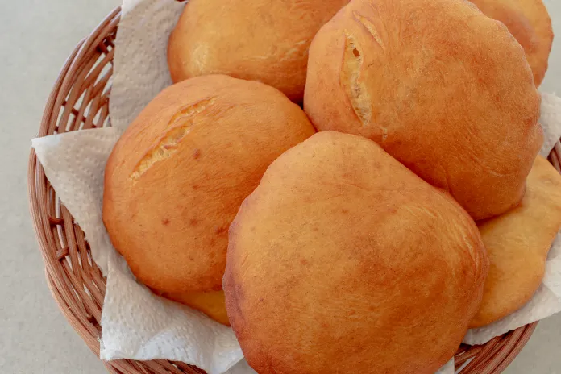

Manglore Buns Few Steps awayy

Description
the Mangalore buns are found only in Mangalore. Although you find a Mangalorean restaurant or Udupi hotel
(as it's commonly known outside Mangalore/South Kanara) blooming in every nook & corner of the world, rarely do you see the
Mangalore buns on the menu. Every die hard Mangalorean will vouch for the taste & instant gratification that this humble snack provides.
Along with goli baje, another quintessential Mangalorean tea time snack, the Mangalore bun remains my all time favourite.
Ingredients
- 250 grams all purpose flour (maida)
- 2 small or 1 large overripe bananas
- 2 tablespoons plain yogurt (curd)
- 2-3 tablespoons granulated sugar
- 1/2 teaspoon cumin seeds (optional but recommended)
- 1/2 teaspoon salt
- 1/4 teaspoon bicarbonate of soda (baking soda)
- 1 tablespoon oil or melted ghee
- oil for deep frying
Steps
- In a large flat vessel (used for kneading dough) mix all the ingredients except maida (curds, sugar, soda bicarb, salt, oil/ghee & mashed bananas. Reserve about a quarter of the flour and add the rest in parts to the wet mixture. Knead to incorporate all the flour except the reserved one. Add very very little water (about a teaspoon or two) at a time ONLY if required to help knead. Actually adding more water will make a mess of your dough, so even wetting your palms while kneading is enough as the wet ingredients have enough moisture to help knead the dough.
Use up the reserved flour if the dough is too pasty after adding the wet ingredients.
- Keep the dough ball covered for 8 hours or overnight in a warm place.
- Make small balls of dough & roll thick ( 5-6cms diameter - about the size of pooris)
- Deep fry until golden brown
- Serve hot with coconut chutney